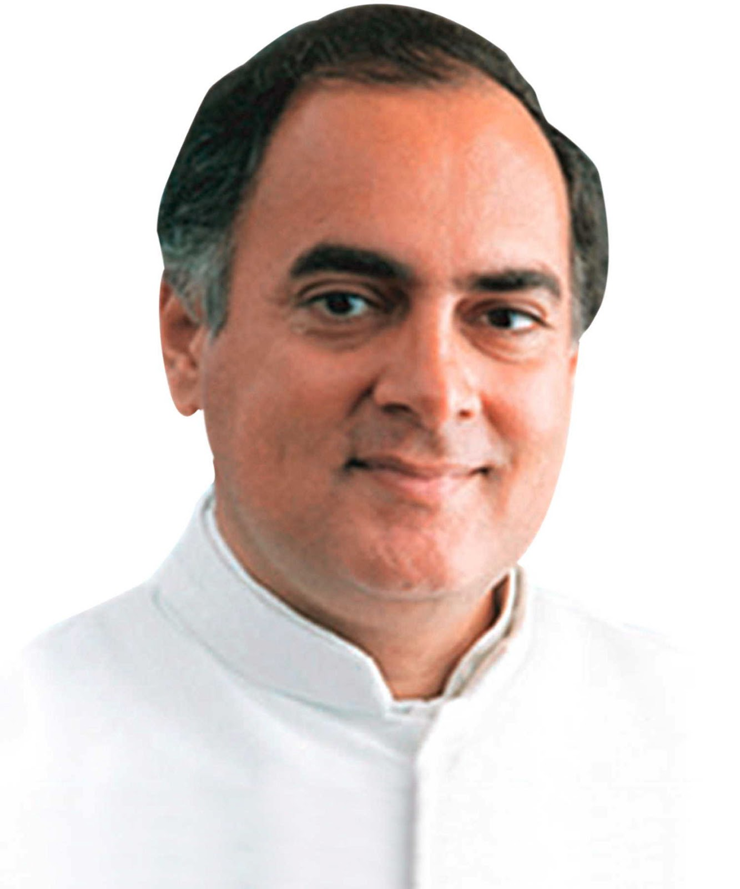
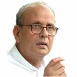
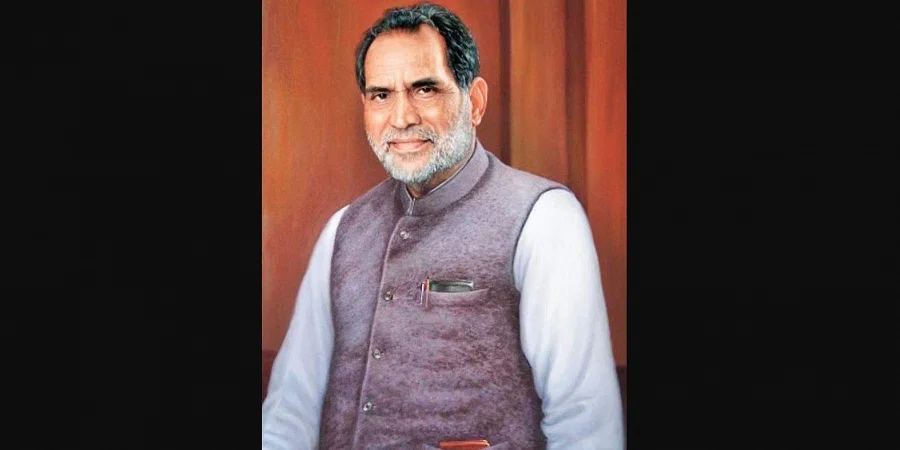
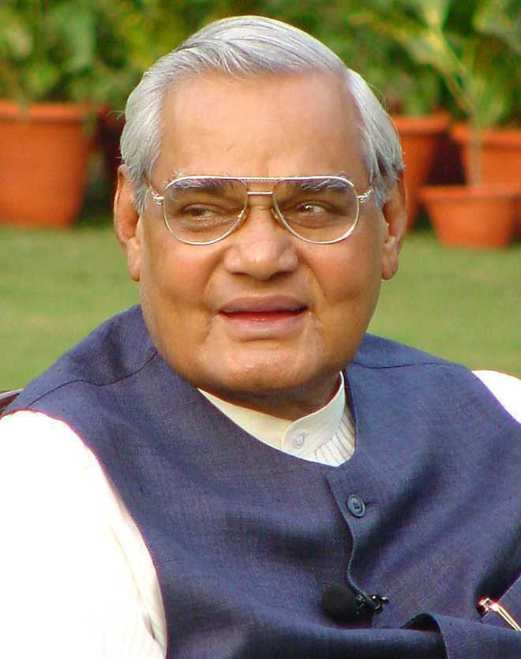
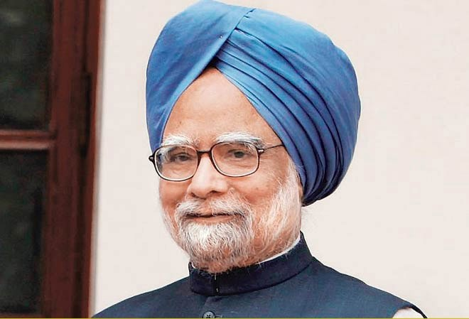

RAJIV GANDHI

Rajiv Gandhi, the 6th Prime Minister of India, led the country from 1984 to 1989. He championed technology and modernization initiatives while facing challenges like the Bhopal gas tragedy and the Bofors scandal. His tenure ended due to electoral defeat, and he was tragically assassinated in 1991 during a political rally in Tamil Nadu.
PRIME MINISTER FROM 1989-1990

Vishwanath Pratap Singh, commonly known as V.P. Singh, served as the seventh Prime Minister of India from December 1989 to November 1990. He belonged to the Janata Dal party and was known for implementing the Mandal Commission recommendations, which aimed at providing reservation to Other Backward Classes (OBCs) in government jobs. His tenure also saw economic reforms and political controversies, including the allegations of corruption in the Bofors scandal.
PRIME MINISTER FROM 1990-1991

Chandrasekhar, of the Samajwadi Janata Party (Rashtriya), served briefly as the eighth Prime Minister of India from November 1990 to June 1991, known for his socialist principles and steadfast commitment to his convictions despite the challenging political landscape.
PRIME MINISTER FROM 1991-1996

Pamulaparti Venkata Narasimha Rao, commonly known as P.V. Narasimha Rao, was the ninth Prime Minister of India, serving from 1991 to 1996. He played a pivotal role in initiating significant economic reforms in India through liberalization and globalization policies known as the "Rao-Manmohan model," which opened up the Indian economy. His tenure saw economic transformation, diplomatic advancements, and major policy changes, positioning him as a pivotal figure in India's modern history.
PRIME MINISTER FROM 1996-2004

Atal Bihari Vajpayee was a prominent Indian statesman and the 10th Prime Minister of India, serving three non-consecutive terms. He was a key figure in Indian politics, known for his oratorical skills, statesmanship, and leadership. Vajpayee's tenure saw significant infrastructural developments, nuclear tests, and efforts to improve India's international relations. He was a founding member of the Bharatiya Janata Party (BJP) and played a pivotal role in shaping India's political landscape. Vajpayee passed away on August 16, 2018, leaving behind a legacy of eloquence, diplomacy, and inclusive governance.
PRIME MINTER FROM 2004-2014

Dr. Manmohan Singh, a renowned economist, served as India's 13th Prime Minister from 2004 to 2014. Known for his pivotal role in the economic reforms of the 1990s, he opened India to globalization and foreign investment. His tenure saw economic growth and landmark policies but faced criticism for corruption scandals and policy slowdowns in later years. His legacy remains a blend of economic expertise and leadership, marked by significant contributions to India's growth and development.
TO KNOW OUR CURRENT PRIME MINISTER CLICK HERE